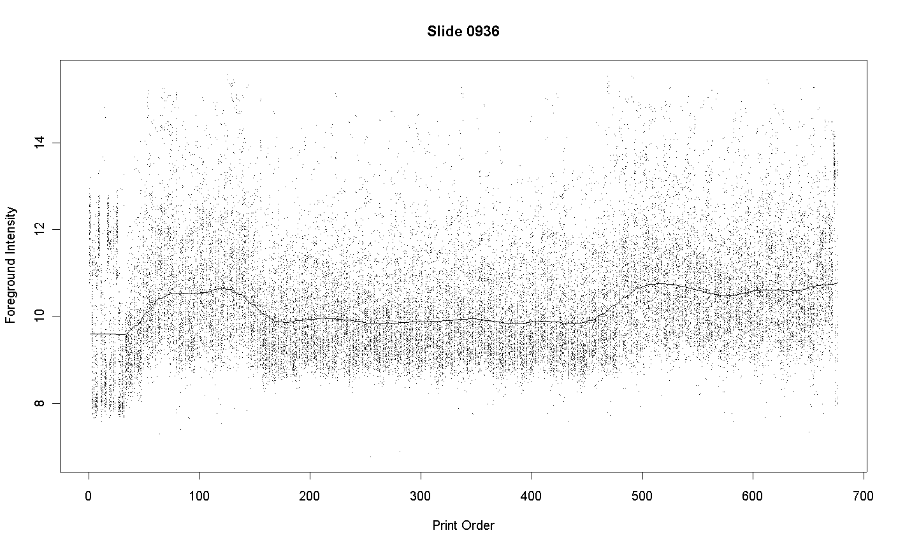
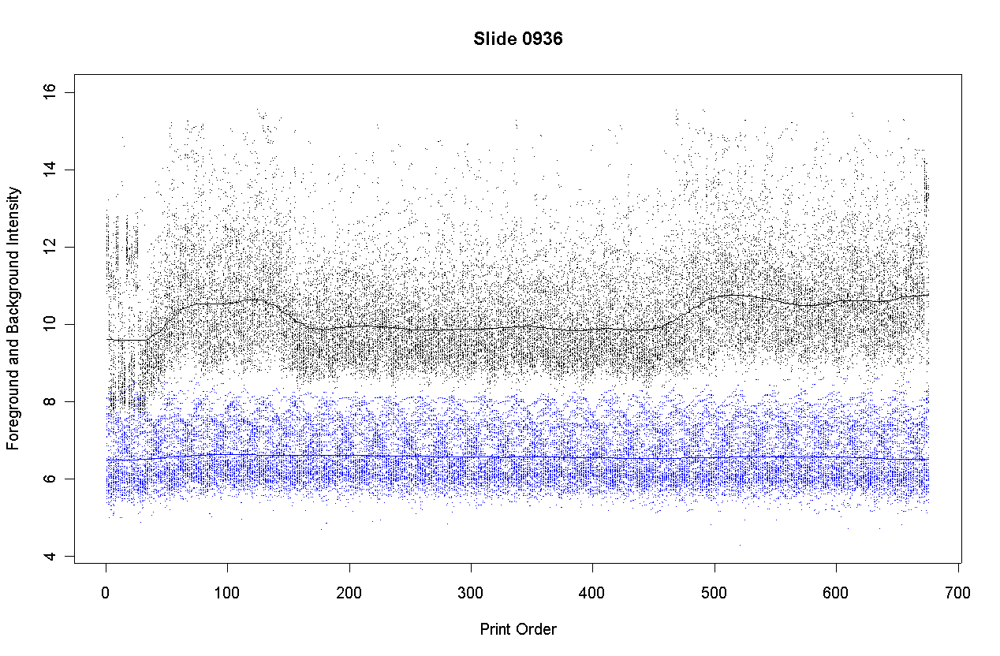
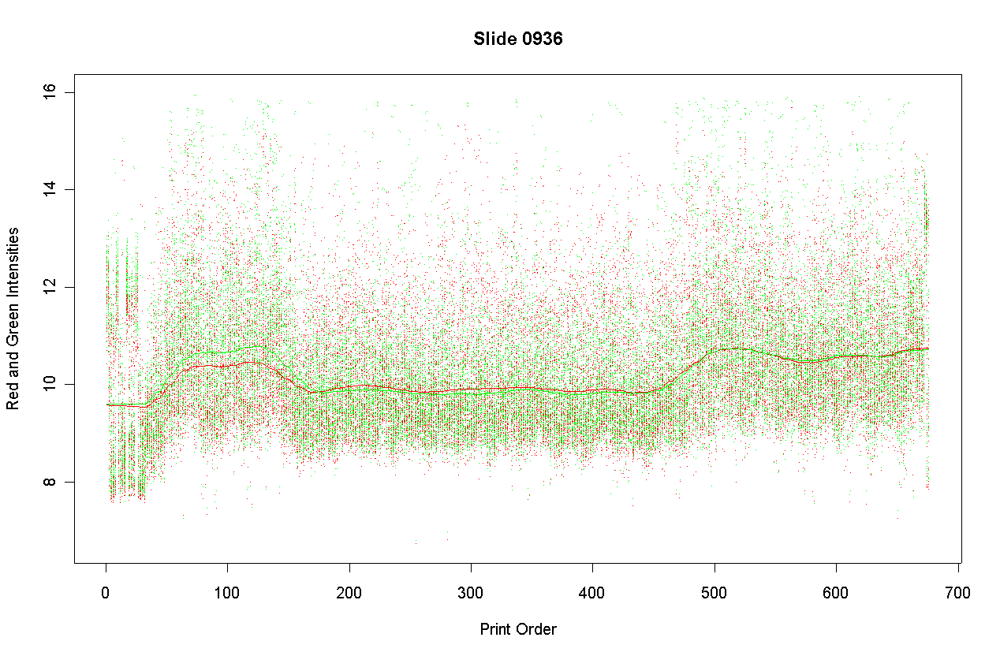
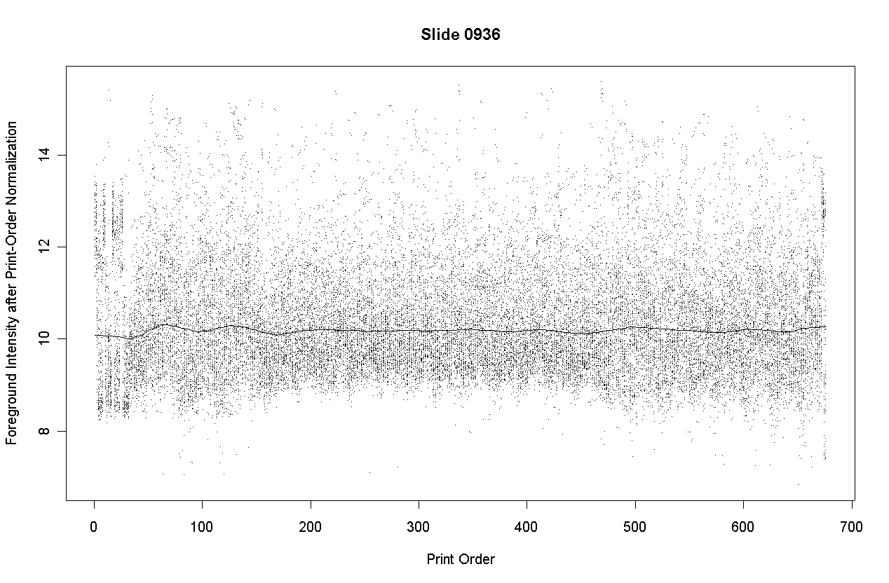
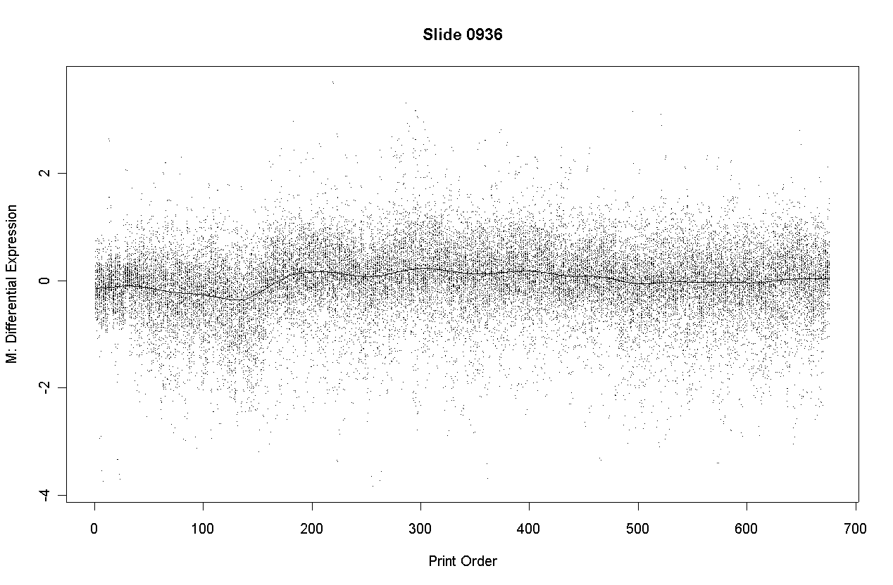
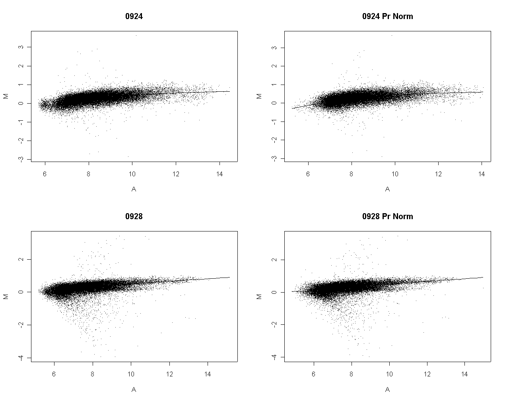
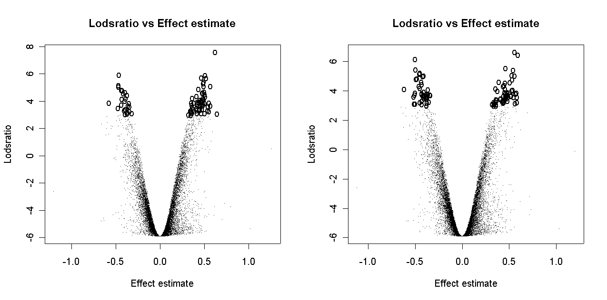

Gordon Smyth
Genetics and Bioinformatics, Walter and Eliza Hall Institute of Medical Research
16 March 2002
The spots on a microarray slide are printed over a period of time. At the Australian Genome Research Facility (AGRF) in Melbourne, Australia, printing more than 32,000 spots on an array slide may take 5 or more days. Spots are printed in parallel using a print head containing 48 print tips. Printing proceeds from top to bottom and right to left in each print tip group. The print head takes up cDNA from standard 384-well plates, each individual plate supplying the DNA for 8 consecutive spots in each tip group. The plates come in packs of 4, so each individual plate-pack corresponds to 32 consecutive spots in each tip group. DNA for the plates is amplified and purified in batches.
Although every effort is made to ensure that the DNA use to print spots on the array is of uniformly high purity, some variations in purity will inevitably occur. Variation will DNA purity will translate into variation in the intensity of the spots after hybridization and scanning. Consider results for the following array printed at the AGRF and hybridized at the Walter and Eliza Hall Institute of Medical Research. The graph plots the foreground intensity for each spot against print-order. Each intensity of the average of the red and green intensities to log-base-2.

The plot shows that the spots 160 to 450 in each tip-group are less intense than spots printed before or afterwards. These spots correspond to plate-packs 6 to 14. Examination of the print records shows that these spots were printed over a period of several days and that the recorded humidities were not any way unusual on these days. The most likely explanation is that plate-packs 6 to 14 used DNA of slightly lower purity.

The plot shows the foreground intensities in black and background intensities in blue. Background is estimated by morphR and morphG (morphological opening and closing in Spot). The plot shows that the background intensities are nearly constant with respect to print-order. This is to be expected because DNA purity cannot affect the intensity of those parts of the slide surface where no DNA has been immobilized.
The printing-step of a microarray precedes hybridizing RNA samples to the array, so one would expect print-order variability to affect both red and green channels in a similar way. The follow graph shows that this is broadly true for Slide 0936.

This graph plots the red and green foreground intensities separately. The red and green intensities are very similar across the print order, except that green is on average more intense for spots of orders 60 to 120, corresponding to plate-packs 3 and 4.
This slide showed the greatest interaction between dye and print-order of any of the six slides in the experimental run. The other five slides showed essentially parallel print-order effects on both red and green intensities.
Consider the smooth loess curve in Figure 1 above. The print-order normalization procedure is to subtract this loess curve from the red and green log-intensities. Denote the print-order for each spot as t and the loess curve as lo(t). Let Af = log2(Rf*Gf)/2, where Rf and Gf are the red and green foreground intensities, be the foreground intensity for each spot. The loess curve is obtained from robust local constant regression of Af on t with span = 0.1. Technically this is loess regression with polynomial degree = 0. Denote the average value of the loess curve by ave lo(t). Let k(t) = lo(t) - ave lo(t). The print-order normalization is to replace Rf and Gf with
Rf = Rf / 2k(t)
Gf = Gf / 2k(t)
This step precedes rather than replaces intensity-based normalization procedures.
The following graph shows the foreground intensities after print-order normalization.

The following slide shows M values after print-order and tip-group intensity-based normlization.

There is some slight dependence of differential expression on print-order.
If normalization is successful, it should reduce uncontrolled variation between replicate arrays and between duplicate spots on an array while preserving differences in expression between genes. After normalization, differences in genes should be more reproducible between arrays and between duplicate spots of the same gene on an individual array.
Print-order normalization was carried on a series of 6 replicate arrays with 16224 genes each with 2 duplicates. Without print-order normalization, the M-values after print-tip intensity-based normalization and between-array scale normalization gave the following sums of squares.
Analysis of Variance Table
Between and Within Genes
Df Sum Sq
Between genes 16223 4396.9
Within genes 178464 9843.1
Within genes: between arrays 81120 6999.1
Within genes: within arrays 97344 2844.1
After print-order normalization the sums of squares were as follows.
Analysis of Variance Table
Between and Within Genes
Df Sum Sq
Between genes 16223 4904.0
Within genes 178464 9667.0
Within genes: between arrays 81120 6958.1
Within genes: within arrays 97344 2708.9
Separate print-order normalization for the dye channels turns out not to be worthwhile. If this is done, the between genes SS is much reduced.

